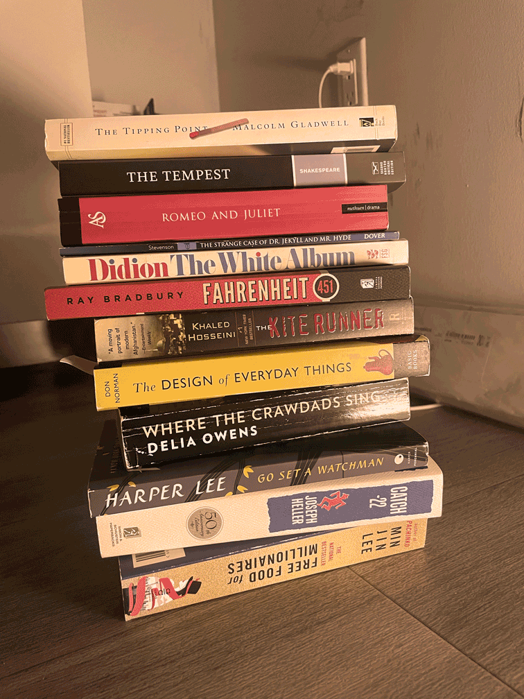

I keep them in my room .
The Tipping Point by Malcom Gladwell
The Tempest by William Shakespeare
Romeo and Juliet by William Shakespeare
The Tempest by William Shakespeare
Fahrenheit 451 by Ray Bradbury
The Martian Chronicles by Ray Bradbury
The Kite Runner by Khaled Hosseini
The White Album by Joan Didion
The Strange Case of Dr. Jekyll and Mr. Hyde by Robert Louis Stevenson
The Design of Everyday Things by Don Norman
Where the Crawdads Sing by Delia Owens
Go Set a Watchman by Harper Lee
Catch-22 by Joseph Heller
Free Food for Millionaires by Min Jin Lee
Pachinko by Min Jin Lee
Korean-English Bible New International Version
The Joy Luck Club by Amy Tan
Immortal Poems edited by Oscar Williams
Villette by Charlotte Bronte
Peking Story by Daid Kidd
The Course of Love by Alain De Botton
American Dirt by Jeanine Cummins